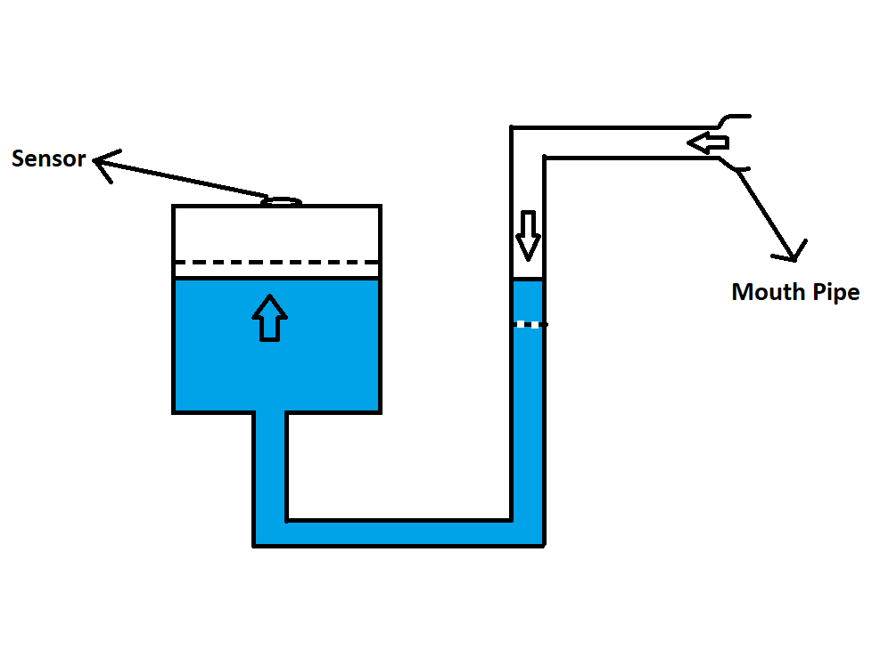
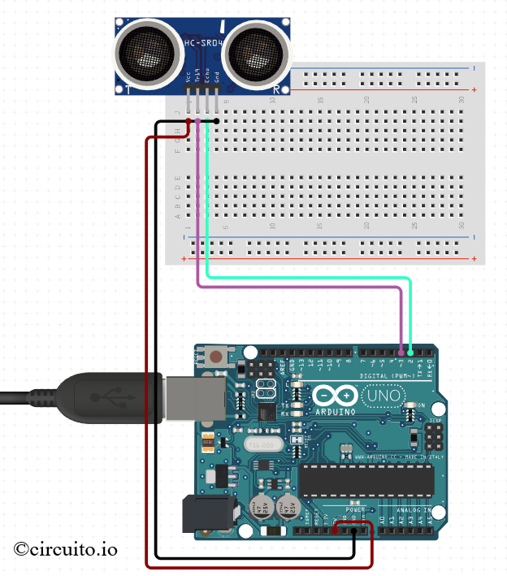

Medical Spirometer
As part of Fluid Mechanics Laboratory Course in the 3rd semester under Dr. Venugopal Arumuru, Assistant Professor, School of Mechanical Sciences. We have taken up a project as part of the Laboratory course to practically apply the concepts of Fluid Mechanics. I was joined by my batchmates, Mr. Shivam Handa, Mr. PVS Hemanth and Mr. Aqib Mujtaba in this project. We have taken up the topic of Medical Spirometer for studying the Pascals Law and its practical application. A medical spirometer is a diagnostic device used to measure lung function. It assesses the lung capacity, airflow rates, and volume variations during breathing. It is a valuable device for diagnosing and managing respiratory conditions like asthma and COPD. Spirometers aid in treatment planning and monitoring progress through objective lung function measurements.

Working Principle
As shown in the figure here, the system consists of a mouth piece at a height higher than the level of the water in the tank. The fluid used for this purpose
was water. However, the fluid can be changed to some other fluid with a lower density for the ease of the user.
As a person expells out air from the mouth pipe,the pressure of air pushes water in the left limb down leading to rise in water level in the water
tank initially for a small time and then the water level will fall due to back pressure.
 An ultrasonic sensor (HC-SR04) has been attached on top of the container with the fluid in it. The container was taken with a cylindrical shape to ensure uniformity in the rise and fall of the fluid levels. The sensor is controlled with an Arduino Uno board to take the readings of the changes in the levels, as the user blows air into the mouthpiece. The sensor works in a way similar to SONAR in submarines. The HC-SR04 is often compared to a chatty bat: it sends out sound waves, waits for them to bounce back after hitting an object, and then calculates how far away the object is based on the time it took for the echoes to return. The layout and the code were developed using the Circuito website
The code developed for this project tries to plot the values of the rise in water levels and find the peak to determine the lung capacity. This data is thereby, calibrated with a dataset of healthy people to ensure there is no discrepancy in the design of the project. The code used is given here:
#include <NewPing.h>
#define HCSR04_PIN_TRIG 3
#define HCSR04_PIN_ECHO 2
NewPing hcsr04(HCSR04_PIN_TRIG, HCSR04_PIN_ECHO);
void setup()
{
Serial.begin(9600);
}
void loop()
{
int distance = hcsr04.ping_cm();
Serial.println(distance); // Send distance value to Serial Plotter
delay(100); // Adjust the delay as needed
}